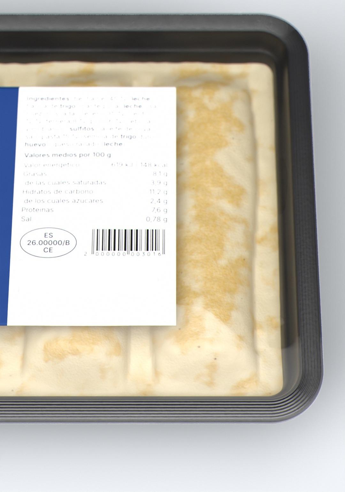

What we inspect on each pack
At AIS Vision Systems, we develop machine vision solutions for quality control in the food industry. We inspect heat seals, packs, labels and products in real time to detect defects, improve efficiency and strengthen food safety.

1234Pack
Deformation and damage to the tray.
Label
Presence and reading of batch, expiry date and codes.
Product
Foreign bodies and defects visible through the film.
Heat sealing
Bubbles, wrinkles and seal defects around the entire perimeter.